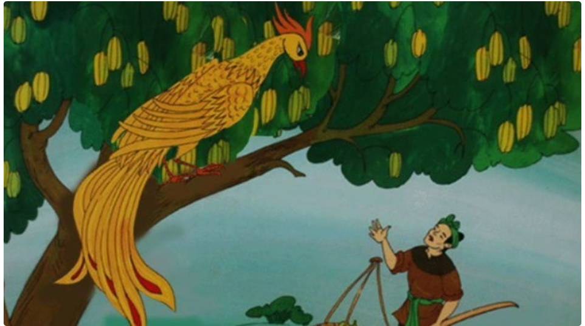
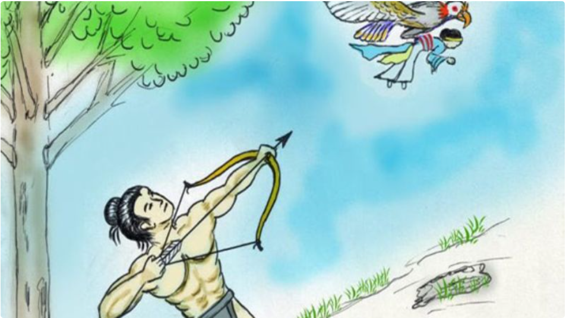
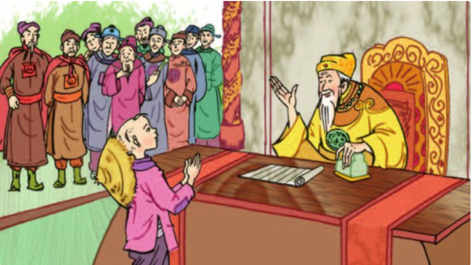
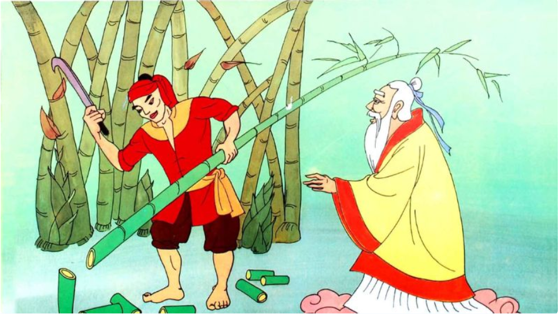
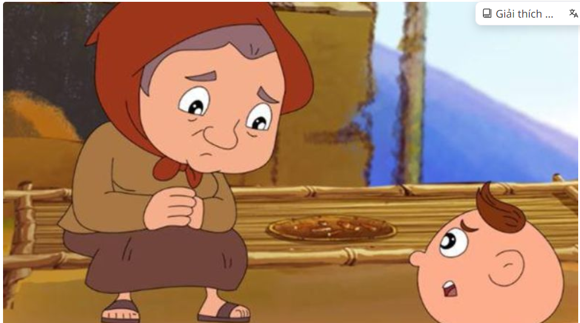
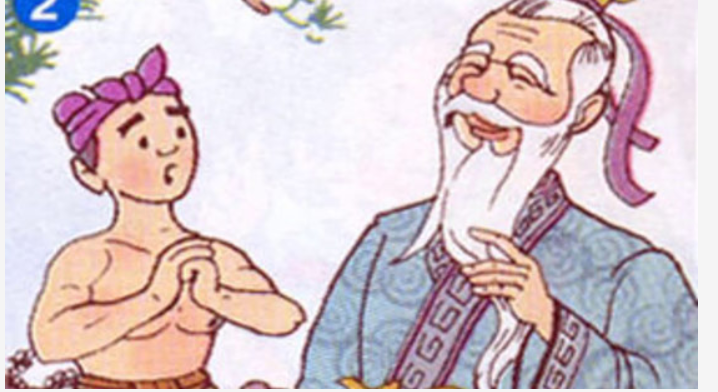
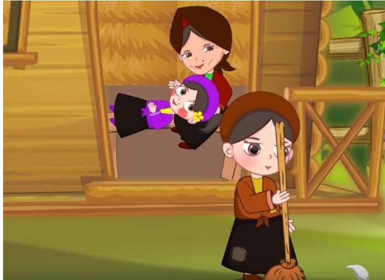

New
Một gia đình nọ có hai anh em cha mẹ mất sớm, được kế thừa một
khối gia sản lớn. Vợ chồng người anh tham giam tranh giành hết nhà
cửa, của cải chỉ để lại cho người em một cây khế. Bỗng một ngày có
một con chim đến ăn khế và đưa cho người em một chiếc túi ba gang
lấy vàng để trả ơn. Người anh thấy vậy liền đổi cả gia tài của
mình lấy cây khế nhằm lấy vàng. Vì tham lam may túi quá to chứa
nhiều vàng nên người anh rơi xuống biển và chết.
Travel . Events
May 24, 2022
36 comments
by Admin Nat

New
Thạch Sanh
Thạch Sanh vốn là Thái tử, được Ngọc Hoàng sai xuống đầu thai làm
con của hai vợ chồng nông dân nghèo. Mất cha mẹ từ sớm, cậu sống
dưới một gốc cây đa và được dạy đủ phép thần thông, võ nghệ. Lý
Thông lợi dụng Thạch Sanh về sống chung để thay mình cống nạp cho
Chằn Tinh. Thạch Sanh đã dũng cảm diệt trừ Chằn Tinh, tuy nhiên
lại bị Lý Thanh cướp công trắng trợn. Cuối cùng Thạch Sanh cũng đã
được giải oan và cưới công chúa còn Lý Thông đã bị trừng trị thích
đáng.
Creative . Design . Business
April 09, 2021

Vì để tìm ra hiền tài cho đất nước, nhà vua ra lệnh cho quan viên
dò ra khắp cả nước và đặt ra những câu hỏi hóc búa nhằm thử tài.
Hai cha con đang làm ruộng được quan viên thách đố với câu hỏi hóc
búa, đứa bé đã có thể trả lời thoăn thoắt. Cậu bé còn dùng “gậy
ông đập lưng ông” để giải câu hỏi và giúp dân làng thoát tội khiến
vua nể phục. Sau đó cậu bé còn thử thách với những câu hỏi khó hơn
và trả lời được cả câu hỏi của vua láng giềng, tránh chiến tranh
cho đất nước. Nhà vua bèn xây dinh thự cho cậu cạnh hoàng cung và
phong cậu làm Trạng nguyên.
Music . Audio
June 11, 2020
24 comments
by John Walker

Một anh chàng mồ côi nghèo là Khoai tính tình hiền lành, chất phác
đi làm thuê cho một phú ông. Một hôm, phú ông gọi cậu đến và muốn
gả con gái cho với điều kiện phải làm việc chăm chỉ ngày đêm. Phú
ông trở nên giàu có và đến ngày cưới, ông lại thách cậu phải tìm
được cây tre trăm đốt mới gả con gái cho. Chàng trai vào rừng đi
tìm kiếm và được Bụt giúp đỡ. Cuối cùng cậu đem theo cây tre trở
về, chỉ sau tiếng hô “khắc nhập” một cây tre trăm đốt đã xuất
hiện. Lão phú ông đành phải gả con gái cho và từ đó họ sống hạnh
phúc bên nhau.
Music . Audio
February 15, 2023

Sọ Dừa
Ngày xưa có hai vợ chồng nghèo sống rất hiền lành, tốt bụng, chăm
chỉ nhưng lại mãi không có con. Một hôm người vợ ra đồng nhìn thấy
một cái sọ dừa đầy nước thì bưng lên uống, sau đó thì liền có thai
và sinh ra một đứa trẻ không tay không chân tròn như quả dừa. Sau
khi lớn lên Sọ Dừa chăn bò cho phú ông, hai cô con gái lớn của phú
ông luôn hắt hủi Sọ Dừa, duy chỉ cô con gái út luôn đối đãi tốt
với cậu và đem lòng yêu Sọ Dừa. Sọ Dừa nhờ mẹ đến hỏi vợ và cưới
được cô út, hiện nguyên hình là cậu thanh niên tuấn tú. Sọ Dừa
chăm chỉ thi đỗ trạng nguyên, tuy nhiên người vợ thì bị hai cô chị
hãm hại. Tuy nhiên may sao vợ chồng Sọ Dừa được đoàn tụ và sống
hạnh phúc về sau.
Artworks . Design
November 12, 2022
72 comments
by Admin Sam

Truyện tranh dân gian "Ba Lưỡi Rìu" là một câu chuyện dân gian nổi
tiếng của Việt Nam, kể về một người nông dân thông minh và công
bằng. Trong câu chuyện, người nông dân này làm mất một cái rìu
xuống hồ. Thần nước xuất hiện và lần lượt đưa cho anh ta ba cái
rìu: một cái bằng vàng, một cái bằng bạc, và một cái bình thường.
Người nông dân từ chối hai cái rìu đầu tiên và chỉ nhận cái rìu
thường, chứng tỏ lòng trung thực của mình. Thần nước rất hài lòng
với sự trung thực này và đã tặng anh cả ba cái rìu. Câu chuyện này
mang thông điệp về sự trung thực và lòng tốt. Nó cũng nhấn mạnh
giá trị của việc làm điều đúng đắn ngay cả khi không ai chứng
kiến, và sự thưởng công cho những người có đức tính tốt.
Creative . Video . Audio
February 20, 2023
84 comments
by Admin Sam

Tấm Cám kể về câu chuyện của một cô gái tên Tấm, cha mẹ mất sớm,
cô phải sống cùng dì ghẻ và người em cùng cha khác mẹ là Cám.
Trong khi Tấm là cô gái hiền lành, tốt bụng thì Cám lại là người
tham ăn lười làm, luôn cùng dì ghẻ tìm cách hãm hại, đối xử bất
công với Tấm. Mặc dù bị mẹ con Cám ngăn cấm đi chơi hội, thế nhưng
với sự giúp đỡ của Bụt, Tấm đã đến có quần áo đến lễ hội và nhờ
chiếc giày được ban cho, Tấm trở thành hoàng hậu. Trải qua bao khó
khăn bởi bị mẹ con Cám hãm hại, cuối cùng Tấm đã được đoàn tụ với
vua và sống hạnh phúc.
Visual . Artworks
June 16, 2020
96 comments
by Admin Sam